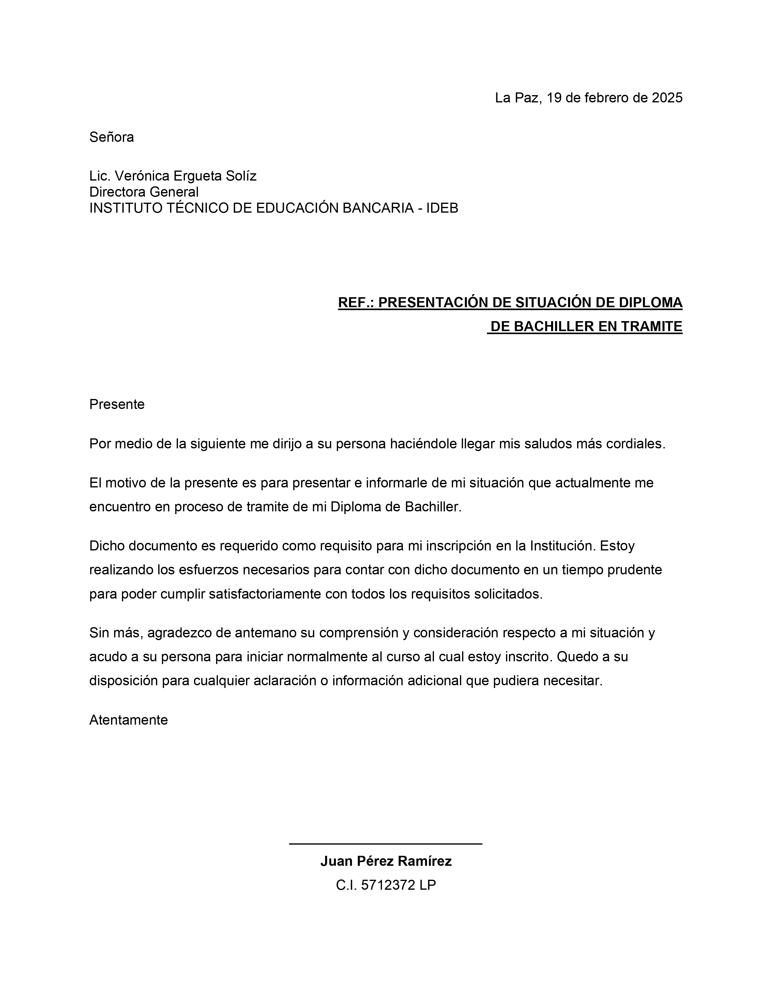

Redacción y Formato de Carta Formal
Alineaciones precisas, tabulaciones y sangrías
Objetivo de la Práctica
Aprender a estructurar una carta formal siguiendo las normas de redacción, manejando correctamente las alineaciones a la derecha para fechas y firmas.
Instrucciones Paso a Paso
1. Descarga del Material
Descarga el modelo base que contiene los datos del remitente y destinatario.
2. Estructura de la Carta
- Fecha y Lugar: Alínea este texto a la derecha.
- Encabezado: Mantén los datos del destinatario a la izquierda, en negrita.
- Cuerpo: Redacta un mensaje de al menos dos párrafos con alineación justificada.
- Despedida y Firma: Centra o alinea a la derecha el bloque de firma al final del documento.
3. Tabulaciones
- Práctica el uso de la tecla Tab para crear espacios uniformes si decides añadir una lista de documentos adjuntos al final.
Entregable
Guarda el documento como P03-CartaFormal-TuNombre.docx.
Resultado Esperado
Tu documento final debería lucir similar a esto:
